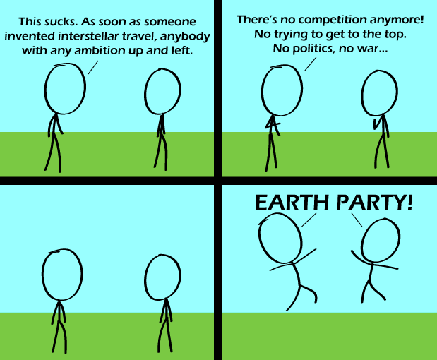

Comic JK 571
When I Feel Like It
⇤
<
?
>
⇥

⇤
<
?
>
⇥
Forum
.
RSS
.
Digg
.
Facebook
.
Reddit
.
Twitter
.
Stumbleupon
>>>>>>>>>>>>anyone who is a regular reader increment count by one ... $i=60; $i++; Enter your thoughts on number 571 here. Please, no spamming, trolling, phreaking, or meekness. The reality is that the meek will only inherit your mother. This is actually quite true for people who leave their home towns as young adults. They are the ones with ambition, and the ones who stay behind their entire lives are generally complacent dullards by comparison. They can have it. > This reminds me of Groucho Marx: "Africa is God's country, and He can have it!" > Seconded >> Minuted. >>> Houred. >>>>... Centuried. >>>>> You missed Dayed, Weeked, Monthed, Yeared, Decaded..... >>>>>> Decaded.readAloud()~=Decayed.readAloud() >>>>> Sesquicentennialed >>>>> Milleniumed >>>>>> Megaannumed >>>>>>> Gigaannumed >>>>>>>> Exaannumed >>>>>>>>>3-4i'd You know, if I thought that that would actually happen I would release the specifications for my Alcubierre drive. >didn't wikileaks do that last week? >>No, that wasn't my Alcubierre drive, you see, my Alcubierre drive actually works. >>>I'm more of a fan of the Albuquerque drive, myself. >>>>I think you missed your turn. The meek will inherit the earth - but the bold will conquer the stars. > Who says the stars are any more exciting than the earth? :) >> Because there are more of them, there's bound to be good TV SOMEWHERE out there. >>>That's a terribly optimistic sentiment. >>>> "terribly optimistic"? nice >> Also, probably something about limited shelf life of a single planet. >>> Especially when operated outside of its rated maximum parameters. >>>>But it isn't as old as all the others due to the temporal barrier slowing us down!